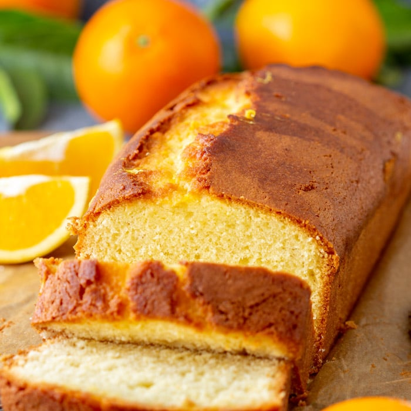

Orange Bread
Orange Bread

A subtly sweet, delicious bread.
Ingredients
- 3-5 Oranges
- 12 eggs
- 2 1/4 cups of sugar
- 3 sticks of butter
- 6 cups of pancake mix
- 3 cups of flour
- vanilla extract
Steps
- Grate 3 oranges crust off the orange
- Squeeze 3/5 Oranges of their juice
- Crack and seperate the Egg yolk, from the egg whites
- Beat egg whites until they're fluffed "El Pico"
- Add 2 1/4 cups of sugar to egg whites, an additional 1/2 cup can be added if wanted.
- Add the Egg yolks, 3 sticks of melted butter, Orange Juice, and orange zest
- Bake at 450 degrees, reduce to 350 degrees
Return to home page